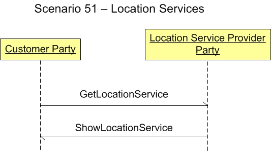

Scenario 51 - Location Services51.0 OverviewScenario #51 describes the integration for customer party applications to integrate with a location service provider application.The purpose of this scenario is to enable the visualization of the participants in the process and the dialogs between them for this specific integration. This scenario is not meant to be the only model for integrating general ledger applications to a budget applications. This is simply one model that may be used to guide one's own integration efforts. 51.1 Scenario DiagramThe scenario below contains the participants involved in the interaction, the dialog flows or conversation between them, certain assumptions about the sequence of events, and assumptions about the technical approach, for example, publish and subscribe.This is a model to be used as a design recommendation, not a required approach.  51.2 AssumptionsThis scenario assumes a loosely coupled, asynchronous approach with transaction management required but not explicitly defined.The environment for this initial integration is typically within an enterprise and/or between divisions. It can also be used for integration between two enterprises. This scenario also assume that one application will maintain the master data for integration. 51.3 Participant DefinitionsThis scenario contains two participants or roles: a consumer of the location service - a customer party and the location service provider.51.4 Business Workflow (Sequence)The business workflow is graphically represented by starting at the Scenario top and reading from top down and from left to right.This scenario contains the following events in the workflow sequence:
51.5 Exception HandlingException handling is highly localized as the result of an implementation's infrastructure, management and business rules. As such, this section of the Scenario documentation is planned to be used as a guide to help understand the additional intent of these Scenarios. If no exceptions are noted here, then it can be assumed that the Scenario designers agreed that the Scenario is straight forward and has no additional needs:
Copyright OAGi 2016 - All Rights Reserved -- OAGIS release 10.3 - Document Number: 20160901-51 |